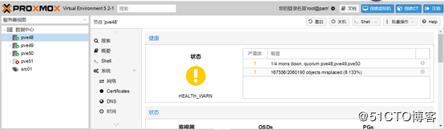

问题描述
在现有集群加入一个物理节点，接着再此节点创建ceph监视器、创建OSD。从宿主机系统执行ceph osd tree查看状态，创建起来的几个OSD状态都正常（up），从proxmox管理界面看也是这样。
突然不知道什么原因，刚加入的节点就突然不能从集群中失效了。

再进宿主机系统查OSD状态，居然自己从up变成down。新增节点没数据，于是就试试重启，看能不能正常。重启以后，网络能通，ssh不能连接，web管理界面也不能访问。接下来，需要先把故障节点从集群中撤离出来，恢复以后，再加入集群。
从集群中删除故障节点
按操作顺序分两个步骤：从集群中删除故障ceph和从集群中删除物理节点。
ü 从集群中删除故障ceph
1. 登录集群任意物理正常节点系统，执行如下命令查看ceph osd状态：
root@pve48:~# ceph osd tree ID CLASS WEIGHT TYPE NAME STATUS REWEIGHT PRI-AFF -1 18.00357 root default -3 4.91006 host pve48 0 hdd 1.63669 osd.0 up 1.00000 1.00000 1 hdd 1.63669 osd.1 up 1.00000 1.00000 2 hdd 1.63669 osd.2 up 1.00000 1.00000 -5 4.91006 host pve49 3 hdd 1.63669 osd.3 up 1.00000 1.00000 4 hdd 1.63669 osd.4 up 1.00000 1.00000 5 hdd 1.63669 osd.5 up 1.00000 1.00000 -7 4.91006 host pve50 6 hdd 1.63669 osd.6 up 1.00000 1.00000 7 hdd 1.63669 osd.7 up 1.00000 1.00000 8 hdd 1.63669 osd.8 up 1.00000 1.00000 -9 3.27338 host pve51 9 hdd 1.63669 osd.9 down 0 1.00000 10 hdd 1.63669 osd.10 down 0 1.00000 |
从输出可知物理节点pve51的两个OSD有问题，需要删除。
2. 离线有问题的ceph osd,执行的操作如下：
root@pve48:~# ceph osd out osd.9 osd.9 is already out. root@pve48:~# ceph osd out osd.10 osd.10 is already out. |
操作时要仔细，别把正常的osd离线了。
3. 删除已经离线osd认证信息，执行的操作如下：
root@pve48:~# ceph auth del osd.9 updated root@pve48:~# ceph auth del osd.10 updated |
4. 彻底删除故障osd，操作如下：
root@pve48:~# ceph osd rm 9 removed osd.9 root@pve48:~# ceph osd rm 10 removed osd.10 |
注意：此操作ceph最后一列参数与前边的不同，是纯数字格式！！！
5. 查看集群osd状态，操作如下：
root@pve48:~# ceph osd tree ID CLASS WEIGHT TYPE NAME STATUS REWEIGHT PRI-AFF -1 18.00357 root default -3 4.91006 host pve48 0 hdd 1.63669 osd.0 up 1.00000 1.00000 1 hdd 1.63669 osd.1 up 1.00000 1.00000 2 hdd 1.63669 osd.2 up 1.00000 1.00000 -5 4.91006 host pve49 3 hdd 1.63669 osd.3 up 1.00000 1.00000 4 hdd 1.63669 osd.4 up 1.00000 1.00000 5 hdd 1.63669 osd.5 up 1.00000 1.00000 -7 4.91006 host pve50 6 hdd 1.63669 osd.6 up 1.00000 1.00000 7 hdd 1.63669 osd.7 up 1.00000 1.00000 8 hdd 1.63669 osd.8 up 1.00000 1.00000 -9 3.27338 host pve51 9 hdd 1.63669 osd.9 DNE 0 10 hdd 1.63669 osd.10 DNE 0 |
操作完成后，故障节点的osd状态从down变成了DNE
6. 删除故障节点的ceph磁盘，操作如下：
root@pve48:~# ceph osd crush rm osd.9 removed item id 9 name 'osd.9' from crush map root@pve48:~# ceph osd crush rm osd.10 removed item id 10 name 'osd.10' from crush map |
7. 从ceph集群中删除物理节点，操作如下：
root@pve48:~# ceph osd crush rm pve51 removed item id -9 name 'pve51' from crush map |
8. 执行指令 ceph osd tree 查看状态，看是否把故障节点从ceph集群清理出去。
ü 从集群中删除故障节点
Ø 集群上的操作
登录集群中任意正常节点，执行如下指令进行驱逐操作：
root@pve48:~# pvecm delnode pve51 Killing node 4 |
Ø 故障机恢复操作
最好全部干掉，重新安装系统，并用新的ip地址，加入集群。


Ctrl+Enter 发布
发布
取消